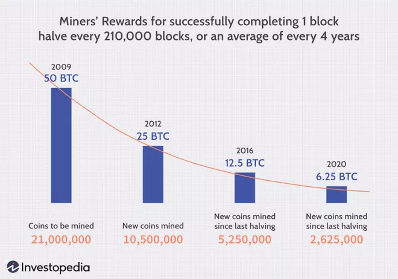

How Does Bitcoin Mining Work?
What Is Bitcoin Mining?
Bitcoin mining is the process by which new bitcoins are entered into circulation. It is also the way the network confirms new transactions and is a critical component of the blockchain ledger's maintenance and development. "Mining" is performed using sophisticated hardware that solves an extremely complex computational math problem. The first computer to find the solution to the problem receives the next block of bitcoins and the process begins again.
KEY TAKEAWAYS
- By mining, you can earn cryptocurrency without having to put down money for it.
- NBitcoin miners receive bitcoin as a reward for completing "blocks" of verified transactions, which are added to the blockchain.
- Mining rewards are paid to the miner who discovers a solution to a complex hashing puzzle first, and the probability that a participant will be the one to discover the solution is related to the portion of the network's total mining power.
- You need either a graphics processing unit (GPU) or an application-specific integrated circuit (ASIC) in order to set up a mining rig.
TIP: Throughout, we use "Bitcoin" with a capital "B" when referring to the network or the cryptocurrency as a concept, and "bitcoin" with a small "b" when we're referring to a quantity of individual tokens.
Why Bitcoin Needs Miners
Blockchain "mining" is a metaphor for the computational work that nodes in the network undertake in hopes of earning new tokens. In reality, miners are essentially getting paid for their work as auditors. They are doing the work of verifying the legitimacy of Bitcoin transactions. This convention is meant to keep Bitcoin users honest and was conceived by Bitcoin's founder, Satoshi Nakamoto. By verifying transactions, miners are helping to prevent the "double-spending problem."
Double spending is a scenario in which a Bitcoin owner illicitly spends the same bitcoin twice. With physical currency, this isn't an issue: When you hand someone a $20 bill to buy a bottle of vodka, you no longer have it, so there's no danger you could use that same $20 bill to buy lotto tickets next door. Though counterfeit cash is possible, it is not exactly the same as literally spending the same dollar twice. With digital currency, however, as the Investopedia dictionary explains, "there is a risk that the holder could make a copy of the digital token and send it to a merchant or another party while retaining the original."
Let's say you had one legitimate $20 bill and one counterfeit of that same $20. If you were to try to spend both the real bill and the fake one, someone who took the trouble of looking at both of the bills' serial numbers would see that they were the same number, and thus one of them had to be false. What a blockchain miner does is analogous to that—they check transactions to make sure that users have not illegitimately tried to spend the same bitcoin twice. This isn't a perfect analogy—we'll explain in more detail below.
Important: Only 1 megabyte of transaction data can fit into a single bitcoin block. The 1MB limit was set by Satoshi Nakamoto, and this has become a matter of controversy because some miners believe the block size should increase to accommodate more data, which would effectively mean that the Bitcoin network could process and verify transactions more quickly.
Why Mine Bitcoin?
In addition to lining the pockets of miners and supporting the Bitcoin ecosystem, mining serves another vital purpose: It is the only way to release new cryptocurrency into circulation. In other words, miners are basically "minting" currency. For example, as of March 2022, there were just under 19 million bitcoins in circulation, out of a total of 21 million.
How Much a Miner Earns
The rewards for Bitcoin mining are reduced by half roughly every four years. When bitcoin was first mined in 2009, mining one block would earn you 50 BTC. In 2012, this was halved to 25 BTC. By 2016, this was halved again to 12.5 BTC. On May 11, 2020, the reward halved again to 6.25 BTC.

Image by Sabrina Jiang © Investopedia 2021
TIP: If you want to estimate how much bitcoin you could mine with your mining rig's hash rate, the site CryptoCompare offers a helpful calculator. Other web resources offer similar tools.
What You Need to Mine Bitcoins
Although individuals were able to compete for blocks with a regular at-home personal computer early on in Bitcoin's history, this is no longer the case. The reason for this is that the difficulty of mining Bitcoin changes over time.
Mining hardware
All of this is to say that, in order to mine competitively, miners must now invest in powerful computer equipment like a graphics processing unit (GPU) or, more realistically, an application-specific integrated circuit (ASIC). These can run from $500 into the tens of thousands of dollars. Some miners—particularly Ethereum miners—buy individual graphics cards as a low-cost way to cobble together mining operations.
An analogy
Say I tell three friends that I'm thinking of a number between one and 100, and I write that number on a piece of paper and seal it in an envelope. My friends don't have to guess the exact number; they just have to be the first person to guess any number that is less than or equal to it. And there is no limit to how many guesses they get.
The Mining Process
What Is a '64-Digit Hexadecimal Number'?
Here is an example of such a number:
0000000000000000057fcc708cf0130d95e27c5819203e9f967ac56e4df598ee
Image by Sabrina Jiang © Investopedia 2021
What do '64-digit hexadecimal numbers' have to do with Bitcoin mining?
Remember that analogy, in which the number 19 was written on a piece of paper and put in a sealed envelope? In Bitcoin mining terms, that metaphorical undisclosed number in the envelope is called the target hash.
Source: Blockchain.info
How do I guess at the target hash?
All target hashes begin with a string of leading zeroes. There is no minimum target, but there is a maximum target set by the Bitcoin Protocol. No target can be greater than this number:
00000000ffff0000000000000000000000000000000000000000000000000000
The winning hash for a bitcoin miner is one that has at least the minimum number of leading zeroes defined by the mining difficulty.
Here are some examples of randomized hashes and the criteria for whether they will lead to success for the miner:
Note: These are made-up hashes. Image by Sabrina Jiang © Investopedia 2021
To find such a hash value, you have to get a fast mining rig, or, more realistically, join a mining pool—a group of coin miners who combine their computing power and split the mined Bitcoin. Mining pools are comparable to Powerball clubs whose members buy lottery tickets en masse and agree to share any winnings. A disproportionately large number of blocks are mined by pools rather than by individual miners.
In other words, it's literally just a numbers game. You cannot guess the pattern or make a prediction based on previous target hashes. At today's difficulty levels, the odds of finding the winning value for a single hash is one in the tens of trillions. Not great odds if you're working on your own, even with a tremendously powerful mining rig.
Not only do miners have to factor in the costs associated with expensive equipment necessary to stand a chance of solving a hash problem, but they must also consider the significant amount of electrical power mining rigs utilize in generating vast quantities of nonces in search of the solution. All told, Bitcoin mining is largely unprofitable for most individual miners as of this writing. The site CryptoCompare offers a helpful calculator that allows you to plug in numbers such as your hash speed and electricity costs to estimate the costs and benefits.
Source: CryptoCompare
What Are Mining Pools?
The miner who discovers a solution to the puzzle first receives the mining rewards, and the probability that a participant will be the one to discover the solution is equal to the proportion of the total mining power on the network.
Participants with a small percentage of the mining power stand a very small chance of discovering the next block on their own. For instance, a mining card that one could purchase for a couple of thousand dollars would represent less than 0.001% of the network's mining power. With such a small chance at finding the next block, it could be a long time before that miner finds a block, and the difficulty going up makes things even worse. The miner may never recoup their investment. The answer to this problem is mining pools.
Mining pools are operated by third parties and coordinate groups of miners. By working together in a pool and sharing the payouts among all participants, miners can get a steady flow of bitcoin starting the day they activate their miners. Statistics on some of the mining pools can be seen on Blockchain.info.
A Pickaxe Strategy for Bitcoin Mining
As mentioned above, the easiest way to acquire Bitcoin is to simply buy it on one of the many Bitcoin exchanges. Alternately, you can always leverage the "pickaxe strategy." This is based on the old saw that during the 1849 California Gold Rush, the smart investment was not to pan for gold, but rather to make the pickaxes used for mining.
To put it in modern terms, invest in the companies that manufacture those pickaxes. In a cryptocurrency context, the pickaxe equivalent would be a company that manufactures equipment used for Bitcoin mining. You may consider looking into companies that make ASIC equipment or GPUs instead, for example.
Downsides of Mining
The risks of mining are often financial and regulatory. As aforementioned, Bitcoin mining, and mining in general, is a financial risk because one could go through all the effort of purchasing hundreds or thousands of dollars worth of mining equipment only to have no return on their investment. That said, this risk can be mitigated by joining mining pools. If you are considering mining and live in an area where it is prohibited, you should reconsider. It may also be a good idea to research your country's regulation and overall sentiment toward cryptocurrency before investing in mining equipment.
One additional potential risk from the growth of Bitcoin mining (and other PoW systems as well) is the increasing energy usage required by the computer systems running the mining algorithms. Though microchip efficiency has increased dramatically for ASIC chips, the growth of the network itself is outpacing technological progress. As a result, there are concerns about Bitcoin mining's environmental impact and carbon footprint.
There are, however, efforts to mitigate this negative externality by seeking cleaner and green energy sources for mining operations (such as geothermal or solar sources), as well as utilizing carbon offset credits. Switching to less energy-intensive consensus mechanisms like proof-of-stake (PoS), which Ethereum has transitioned to, is another strategy; however, PoS comes with its own set of drawbacks and inefficiencies, such as incentivizing hoarding instead of using coins and a risk of centralization of consensus control.
Important: Mining is a metaphor for introducing new bitcoins into the system because it requires (computational) work just as mining for gold or silver requires (physical) effort. Of course, the tokens that miners find are virtual and exist only within the digital ledger of the Bitcoin blockchain.
Why Do Bitcoins Need to Be Mined?
Because they are entirely digital records, there is a risk of copying, counterfeiting, or double-spending the same coin more than once. Mining solves these problems by making it extremely expensive and resource-intensive to try to do one of these things or otherwise "hack" the network. Indeed, it is far more cost-effective to join the network as a miner than to try to undermine it.
How Does Mining Confirm Transactions?
In addition to introducing new BTC into circulation, mining serves the crucial role of confirming and validating new transactions on the Bitcoin blockchain. This is important because there is no central authority such as a bank, court, government, or anything else determining which transactions are valid and which are not. Instead, the mining process achieves a decentralized consensus through proof of work (PoW).
Why Does Mining Use So Much Electricity?
In the early days of Bitcoin, anybody could simply run a mining program from their PC or laptop. But as the network got larger and more people became interested in mining, the mining algorithm became more difficult. This is because the code for Bitcoin targets finding a new block once every 10 minutes, on average. If more miners are involved, the chances that somebody will solve the right hash quicker increases, and so the difficulty increases to restore that 10-minute goal. Now imagine if thousands, or even millions more times that mining power joins the network. That's a lot of new machines consuming energy.
Is Bitcoin Mining Legal?
The legality of Bitcoin mining depends entirely on your geographic location. The concept of Bitcoin can threaten the dominance of fiat currencies and government control over the financial markets. For this reason, Bitcoin is completely illegal in certain places.
Bitcoin ownership and mining are legal in more countries than not. Some examples of places where it was illegal according to a 2018 report were Algeria, Egypt, Morocco, Bolivia, Ecuador, Nepal, and Pakistan. Since 2018, other countries have banned Bitcoin mining including Bangladesh, China, Dominican Republic, North Macedonia, Qatar, and Vietnam. Overall, Bitcoin use and mining remain legal across much of the globe.
Does Crypto Mining Damage Your GPU/Computer?
Because blockchain mining is very resource-intensive, it can put a large strain on your GPU or other mining hardware. In fact, it is not unheard of for GPUs to blow out, or for mining rigs to burst into flames. However, keeping your rigs running at a moderate pace and with sufficient power supplied, it is generally safe.
Can You Mine Bitcoin on Your iPhone?
No. Bitcoin mining today requires vast amounts of computing power and electricity to be competitive. Running a miner on a mobile device, even if it is part of a mining pool, will likely result in no earnings.
The Bottom Line
Bitcoin "mining" serves a crucial function to validate and confirm new transactions to the blockchain and to prevent double-spending by bad actors. It is also the way that new bitcoins are introduced into the system. Based on a complex puzzle, the task involves producing proof of work (PoW), which is inherently energy-intensive. This energy, however, is embodied in the value of bitcoins and the Bitcoin system and keeps this decentralized system stable, secure, and trustworthy.